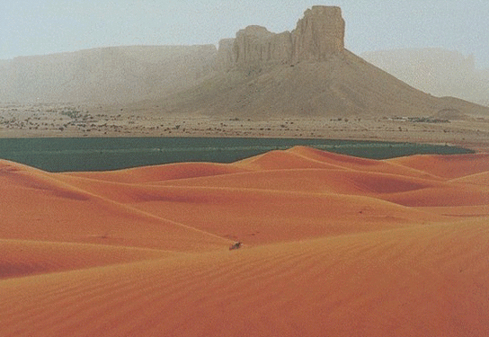

DESERTUL SAHARA - TERRA (Planeta Pamant) Masada a fost redescoperită în 1838, reconstruită începând cu 1966, iar din 2001 este inclusă în Patrimoniul UNESCO. Accesul la fortăreață se face fie cu telecabina de la nivelul Mării Moarte, fie, din partea opusă, printre dunele de nisip ale deșertului. Adulții plătesc 28 de shekeli iar copiii, 14 shekeli.
Unde este singurul deşert din Romania? - Descopera.ro Substanțele active făină de sânge, carbură de calciu, carbonat de calciu, calcar, piper și nisip de cuarț au fost incluse în anexa I la Directiva 91/414/CEE a Consiliului (2 ) prin Directiva 2008/127/CE a Comisiei (3), în conformitate cu procedura stabilită la articolul 24b din Regulamentul (CE) nr. 2229/2004 al Comisiei din 3 decembrie 2004 (4 ) de stabilire a normelor suplimentare ...
Sahara Olteniei, deșertul apărut pe 100.000 de hectare în ... Pe dunele de nisip de obicei insorite din desertul Sahara un rar strat de zapada s-a asternut zilele trecute, oferindu-le algerienilor sansa de a experimenta datul pe derdelus, relateaza Reuters. In conditiile in care temperaturile au atins 1 grad Celsius, locuitorii din orasul Ain Sefra (nordul Algeriei) s-au bucurat de derdelusul de pe dune ...
CELE MAI MARI DESERTURI DIN LUME ... - Beauty is inside you Duna de nisip aproape că și-a dublat dimensiunea în ultimul secol, iar mișcarea ei este cauzată de vânturile care bat dinspre Oceanul Atlantic. Duna s-a format datorită poziției Banc D’Arguin, un banc de nisip de mari dimensiuni situat în ocean, la aproximativ un kilometru distanță de țărm.
Desertul Negev, Israel, o destinatie spectaculoasa. www ... Desertul Lençóis Maranhenses se afla in parcul national Lençóis Maranhenses si acopera o zona de 155.000 hectare de nisip auriu si lagune cu apa albastra. Diferenta dintre desertul Lençóis Maranhenses si alte deserturi este ca aici, cantitatea de apa este 300 ori mai mare decat in Sahara, creandu-se astfel iazuri cu apa cristalina, intre ...
„Deșertul” din Franța - Cea mai înaltă dună de nisip din ... În combinația cu aerul uscat și fierbinte să apară eroziunea este ușor. O mare cantitate de nisip se va forma în mii de ani. Nisipul este clasificat practic în funcție de diametrul particulelor. Nisipul din partea de jos a deșertului are un diametru mai mare și este mai greu.La suprafața deșertului este nisip fin și cu diametru mic, care se adună de regulă în dune.
Mediul desertic - rasfoiesc.com Este vorba de dunele de nisip care înconjoară localitatea Dăbuleni din sudul Judeţului Dolj, dune care alcătuiesc o suprafaţă compactă totală de circa 80.000 de hectare, care-i conferă astfel aparenţa unui adevărat deşert. Practic, aici se poate vorbi despre unicul deşert din Romania, cu atât mai mult cu cât în localitatea ...
desert de nisip - English translation – Linguee Am fost mereu fascinat de viperele care se ingroapa in nisip, iar cand am auzit ca acestea pot fi intalnite si in Desertul Negev, m-am hotarat sa fac o tura in Israel. Am aflat asta de la Shani, un amic de-al meu care locuieste in Be’er Sheva, cel mai mare oras din Desertul Negev. Shani este un fieldherper grozav, dar si un mare iubitor de ...
Desertul - Ce plante traiesc? | Marea Carte: Întrebări şi răspunsuri | Jurnal Spiritual
2020.09.23 19:26

Sign in General Spiritualitate Leagănul copilăriei Actualitate Educație Eveniment Social Justiție Economie Știinţă Cultură Artă Literatură Teatru Muzică Film Istorie Patrimoniu Stil de viață Interviu Poveşti de viaţă Jurnal de călătorie Reportaj Sănătate Sport Internaţional Europa SUA Rusia Asia În lume Recomandate Video Galerie foto Sign in Welcome! Log into your account numele dvs de utilizator parola dvs V-ați uitat parola? Password recovery Recuperați-vă parola adresa dvs de email 23 septembrie 2020 - 20:26 Autentificați-vă / Înregistrați-vă Sign in Bine ați venit! Autentificați-vă in contul dvs numele dvs de utilizator parola dvs Forgot your password? Get help Password recovery Recuperați-vă parola adresa dvs de email O parola va fi trimisă pe adresa dvs de email. Jurnal Spiritual General Spiritualitate Leagănul copilăriei Actualitate Educație Eveniment Social Justiție Economie Știinţă Cultură Artă Literatură Teatru Muzică Film Istorie Patrimoniu Stil de viață Interviu Poveşti de viaţă Jurnal de călătorie Reportaj Sănătate Sport Internaţional Europa SUA Rusia Asia În lume Recomandate Video Galerie foto Acasă General Ce plante trăiesc în deşert? General Actualitate Știinţă
Ce plante trăiesc în deşert?
1 46996 Facebook Twitter Google+ Pinterest WhatsApp Mască individulă la preț de producător - 3,5 RON(inclusivTVA ) - Click AICI
Deşertul nu e o zona propice vietii. Cu toate acestea exista plante ce s-au adaptat conditiilor aprige. În deşert plantele trebuie să supravieţuiască perioade lungi fără apă. De aceea, rădăcinile lor coboară în adâncimea solului, unde găsesc pământ umed. Unele plante, cum este cactusul, au tulpini dense în care înmagazinează apa, în timp ce frunzele sunt cerate, pentru a reduce la minim evaporarea, şi sunt dotate cu spini, pentru a se apăra de animale. Seminţele unora dintre aceste plante se conservă în pământ chiar şi un timp îndelungat, în aşteptarea rarelor ploi. Când acestea sosesc, plantele încolţesc în timp foarte scurt, înfloresc şi mor, răspândind pe pământ alte seminţe.
Deşertul Cum, când, de ce • La ce folosesc spinii?
Spinii sunt în realitate frunze modificate şi servesc plantei nu doar ca intrument de apărare împotriva animalelor. De fapt, planta care are spini expune căldurii solare doar o suprafaţă limitată, reducând, astfel, la minim evaporarea apei din interior. De asemenea, datorită formei lor spinii adună din aer umiditatea nocturnă care, după ce s-a condensat în vârful lor, picură de-a lungul plantei până la rădăcini. Ce sunt plantele suculente?
Se numesc „suculente” plantele capabile să acumuleze apa în interiorul tulpinii şi al frunzelor cărnoase. Cactuşii sunt plante tipice din deşertul din America.
Ferocactusul este o plantă de formă rotunjită, iar florile sale sunt galbene, roşii şi portocalii. Tulpina cu palete a nopalului este acoperită cu spini, aşa cum sunt şi fructele sale.
Recorduri in Deşert
Frunzele agavei ajung la 2 m în lungime, iar floarea are înălţimea de până la 10 m.
Saguaro sau cactusul uriaş atinge 15 m în înălţime, cu spini lungi de 7 cm.
În deşertul din Arizona, un cactus fară braţe, adică fară forma tipică „de candelabru”, a ajuns la înălţimea record de 24 m, cât o casă cu 7 etaje!
Unele exemplare de ferocactus au 3 m înălţime.
Rădăcini eficiente
Deşertul determina rădăcinile plantelor sa se ramifice uneori considerabil în lăţime; în straturile imediat inferioare ale solului, cu scopul de a folosi chiar şi puţina umiditate care se depozitează prin rouă. Din acest motiv plantele cresc foarte departe una de alta.
În deşertul din Africa de Sud creşte „piatra vie”, denumită astfel pentru că extremităţile tulpinelor sale se camuflează în pietre de pe sol.
Frunzele cărnoase ale agavei, cu marginile spinoase care au un ac în vârf, sunt capabile să înmagazineze cantităţi importante de apă. Agava înfloreşte doar o singură dată în viaţă, la vârsta de 10 sau 20 de ani, apoi se ofileşte şi moare.
Marea Carte: Întrebări şi răspunsuri, Ed. Litera Internaţional
Jurnal Spiritual
ETICHETE deşert plante Quo vadis Domine rădăcini spinii Facebook Twitter Google+ Pinterest WhatsApp Articolul precedent Enciclopedia naturii Stațiunea Techirghiol Articolul următor Rugăciunea trebuie să cucerească timpul în toată plinătatea lui Nadia Enachi
ARTICOLE SIMILARE DE LA ACELAȘI AUTOR
Actualitate
S-a întâmplat în 23 septembrie…
Actualitate
23 septembrie Echinocţiul de toamnă- ora 10:50 (ora României)
Actualitate
S-a întâmplat în 23 septembrie 1930
1 COMENTARIU
MARIANA TURCU noiembrie 5, 2017 at 9:06 pm
Ce plane sunt certificate, dati mi cateva exemple Va rog
Răspundeți
LĂSAȚI UN MESAJ Renunțați la răspuns
Cele mai citite
Ne-a acaparat tehnologia, oare, toată atenția?
Cum ne putem apăra de răceli şi gripe?
Remedii naturiste pentru îmbunătăţirea memoriei
S-a întâmplat în 21 aprilie 1882
Încărcați mai multe
Actuale
Spiritualitate
Nimeni nu te va iubi la fel de mult cum te...
Sănătate
Secretul pielii frumoase
Spiritualitate
Poţi cere de la Dumnezeu ca oamenii să creadă?
Spiritualitate
Am o stare proastă!
ALEGEREA EDITORULUI
S-a întâmplat în 23 septembrie…
23 septembrie Echinocţiul de toamnă- ora 10:50 (ora României)
S-a întâmplat în 23 septembrie 1930
POSTĂRI POPULARE
Seminţele de chia: beneficii pentru sănătate şi contraindicaţii
Învaţă limbajul trupului şi nimeni nu te va mai păcăli
CĂTINA Bolile pe care le vindecă miraculoasa plantă
CATEGORIE POPULARĂ
General 12067 Spiritualitate 9261 Recomandate 6356 Actualitate 5766 Cultură 5302 Internaţional 3360 Educație 2247 Social 2167 Știinţă 2096 DESPRE NOI Revistă de dialog etic, estetic și religios. Proiect cultural-educativ susţinut de către Fundaţia Împreună pentru Solidaritate Socială.
O minune contemporană a Sfântului Mucenic Dimitrie
Părintele Teofil Părăian Mustrarea pentru păcat
Slujirea aproapelui
S-a întâmplat în 23 mai 1707
No HTML5 audio playback capabilities for this browser. Use Chrome Browser! Edit with Live CSS Save Write CSS OR LESS and hit save. CTRL + SPACE for auto-complete.